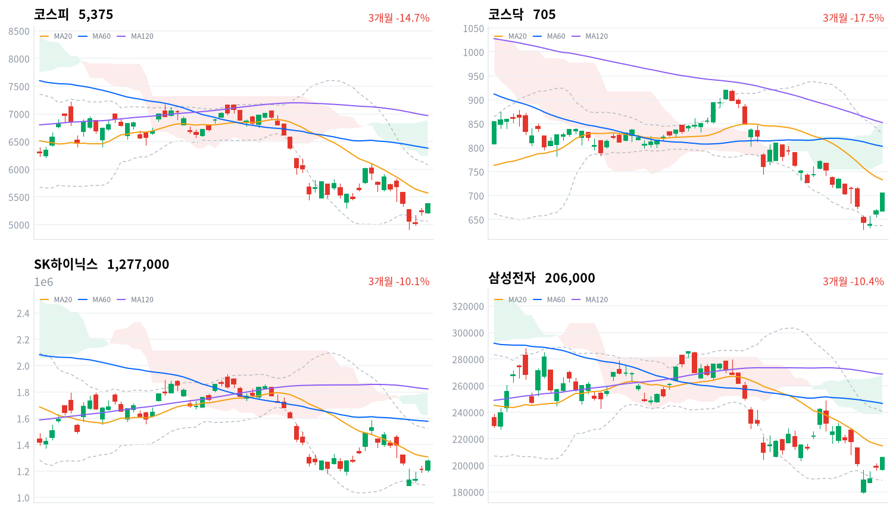

미국 10월 소비자물가가 예상을 웃돌아 국고채 10년물 금리가 10.0bp 올랐는데도 코스피는 약하게 출발한 뒤 하루 고점 부근에서 마감했다. 외국인은 코스피를 6,569억원 순매수해(당일 잠정) 이틀째 샀다.
반도체와 기판주가 상승을 이끌었지만 코스피는 여전히 20일 이동평균 아래에 있다. 11월 12일 미국 금리 부담이 이어지는 가운데 외국인 순매수가 계속되는지를 기다린다.
미국 물가 충격과 한국 주식의 반등이 같은 날 나왔다. 국고채 3년물과 10년물 금리가 나란히 10bp 안팎 올라 할인율 부담이 커졌는데도, 코스피는 장 초반 약세를 딛고 하루 고점 부근에서 마감했고 반도체와반도체장비 업종은 174종목 가운데 162종목이 올랐다. 외국인은 코스피에서 6,569억원을 순매수해(당일 잠정) 이틀째 샀다.
장 마감 뒤 보도는 반등을 코어위브의 3분기 실적 호조가 AI 반도체 수요 기대를 살려 미국 긴축 우려를 눌렀다고 설명했다. 그 설명에 동의한다. 키움증권 한지영 연구원은 12월 50bp 인상이 연준 내 소수 의견이고 Fed Watch상 50bp 인상 확률이 11%에 그친다며, 시장 금리 급등과 증시 부담이 현실화될 가능성은 낮다고 진단했다. 주가는 그 진단대로 버텼지만 국고채 금리는 크게 올라, 채권시장은 물가 부담을 가격에 넣었다. 보도의 설명은 상승이 왜 반도체 대형주보다 거래대금이 훨씬 작은 기판주에서 몇 배 컸는지와, 이틀 동안의 외국인 순매수가 앞선 7거래일 순매도의 10분의 1에도 못 미친다는 점에는 답하지 않는다.
11월 5~9일 급락의 되돌림이 이틀째 이어졌을 뿐이라는 설명도 가능하다. 그러나 전일 미국 지수가 내렸는데도 대만가권이 3.62% 오르고 한국 정규장 동안 나스닥 선물이 0.95% 올라, 이날 상승은 아시아 AI 하드웨어 전반의 반응과 함께 나왔다. 그래서 AI 수요 재료가 금리 상승보다 강하게 한국 반도체로 옮겨 왔고, 한국 고유의 매도 압력이 소진되고 있다는 설명을 우선 설명으로 본다. 장중 투자자별 흐름과 업종별 순매매 자료가 없어 장중 반전을 외국인이 만들었는지는 가리지 못한다. 두 설명은 미국 금리 부담이 이어지는 날에도 외국인 순매수와 반도체 업종의 상대 강세가 유지되는지로 구분된다.
새로 제안할 상품은 없다. 반도체·AI 하드웨어 테마는 한국 대형주가 이틀째 오르며 가격 흐름이 회복됐지만, 코스피와 SK하이닉스 모두 20일 이동평균 아래에 있어 이틀 반등만으로 추세가 바뀌었다고 보기는 이르다. 기판주 급등은 신규 ETF 편입과 테마 매수가 작은 종목에 몰린 결과일 수 있어 따로 판단을 세웠다. 가장 가까운 결정적 일정은 11월 12일 정규장의 외국인 코스피 순매수 방향이다.
코스피가 11월 11일 기준 볼린저 밴드 하단 5,061 아래에서 마감하면, AI 수요 재료가 한국 반도체로 옮겨 오며 외국인 매도가 소진되고 있다는 오늘 판단을 철회한다. 그 경우 이틀 반등을 급락 뒤 되돌림으로 보고, 금리 상승이 성장주 할인율을 통해 다시 주가를 누른다는 설명을 우선 설명으로 본다.
출처: 재경일보, 뉴시스
11월 10일 미국 세션에서 S&P500은 0.38%, 나스닥은 0.74%, 다우는 0.30% 내렸다. 10월 소비자물가가 전월 대비 0.4%(예상 0.3%), 근원이 0.3%(예상 0.2%) 올라 예상을 웃돌았고, 월러 연준 이사가 발표 전 근원 물가가 0.3% 안팎 이상이면 12월 0.5%포인트 인상을 검토하겠다고 말했다는 보도가 나왔다. CME 페드워치의 12월 0.25%포인트 인상 확률은 85.3%로 보도됐다. 아시아에서는 대만가권(+3.62%)과 닛케이(+1.31%)가 오르고 상해종합(+0.46%)은 소폭 올랐으며 항셍(-0.98%)은 내렸다. 코스피는 네 지수 평균(+1.1%)보다 1.5%포인트 앞섰다.
코스피는 전일 종가 5,239.13보다 낮은 5,209.71에서 출발했고, 개장 직후 삼성전자와 SK하이닉스가 1% 안팎 내렸다는 보도가 나왔다. 한국 정규장 동안 S&P500 선물은 0.38%, 나스닥 선물은 0.95% 올라 미국 쪽에서 장중 동력이 더해졌다.
코스피는 개장 직후 5,207이 저점이었고 고점 5,378 바로 아래에서 마감해 하루 범위의 맨 위에서 끝났다. 코스닥은 시가 668.48이 저가, 종가 705.10이 고가였다. 원화는 장중 강해졌다.
미국 물가 부담으로 약하게 출발한 장을 AI 실적 재료가 돌려세운 날로 보도됐다. 코어위브의 3분기 영업이익이 전년 대비 4배로 늘고 연간 전망을 올렸다는 보도가 반전 재료로 꼽혔고, 반도체 대형주와 기판·장비주가 지수를 끌었다. 항공 지주사와 손해보험, 제약 대형주는 내렸다. 외국인이 사고 개인과 기관이 팔았으며, 코스닥에서는 이틀 연속 매수 사이드카가 발동됐다는 보도가 나왔다. 장중 투자자별 흐름과 시간외 거래 자료는 없다.
출처: 서울경제, 아시아투데이, 뉴시스, 재경일보, 매일일보
코스닥이 코스피의 두 배 넘게 올랐다. 코스피는 2.60% 오른 5,375, 코스닥은 5.62% 오른 705.10으로 마감해 코스닥은 700선 위로 올라섰다. 코스피는 이틀 연속 올랐지만 20일 이동평균(5,571)보다 아직 3.5% 낮다.
| 지수 | 종가 | 등락률 | 시가 | 고가 | 저가 | 전일 종가 |
|---|---|---|---|---|---|---|
| 코스피 | 5,375.36 | +2.60% | 5,209.71 | 5,377.99 | 5,207.44 | 5,239.13 |
| 코스닥 | 705.10 | +5.62% | 668.48 | 705.10 | 668.48 | 667.61 |
| 주체 | 순매수(억원) |
|---|---|
| 개인 | -7,149 |
| 외국인 | +6,569 |
| 기관 | -4,824 |
| 주체 | 순매수(억원) |
|---|---|
| 개인 | -1,855 |
| 외국인 | -1,340 |
| 기관 | +3,140 |
코스피를 산 것은 외국인 혼자였다. 외국인은 6,569억원을 순매수해(전일 4,439억원 순매수, 당일 잠정) 이틀째 샀고, 기관은 4,824억원 순매도(전일 4,642억원 순매수)로 돌아섰다. 개인은 7,149억원을 순매도해(전일 1조3,947억원 순매도) 이틀째 상승을 판 쪽이었다. 외국인의 이틀 순매수 합계 1조1,008억원은 그 앞 7거래일 순매도 12조5,489억원의 10분의 1에 못 미쳐, 매도가 멈춘 것과 되사기 시작한 것은 아직 구분되지 않는다.
코스닥이 5.62% 오른 날에도 외국인은 1,340억원을 순매도해(전일 1,479억원 순매도) 5거래일째 팔았다. 기관은 3,140억원을 사서(전일 2,147억원 순매수) 4거래일째 순매수했다. 전일 값은 이날 다시 받은 잠정치라 지난 글의 값(코스피 외국인 4,143억원 순매수)과 다르다.
장중 누적 수급과 프로그램 매매는 받을 수 있는 자료가 없어 싣지 않는다.
| 순위 | 종목/ETF | 구분 | 거래대금 | 비고 |
|---|---|---|---|---|
| 1 | SK하이닉스 | 개별주 | 3.92조원 | - |
| 2 | 삼성전자 | 개별주 | 3.13조원 | - |
| 3 | 반도체 테마 ETF | 테마·롱 | 1.86조원 | 29종 합산 |
| 4 | 삼성전기 | 개별주 | 0.56조원 | - |
| 5 | 삼성전자우 | 개별주 | 0.48조원 | - |
| 6 | SK스퀘어 | 개별주 | 0.48조원 | - |
| 7 | KODEX CD금리액티브(합성) | 단기금리·현금성 | 0.39조원 | - |
| 8 | 삼성SDI | 개별주 | 0.29조원 | - |
| 9 | 2차전지 테마 ETF | 테마·롱 | 0.29조원 | 14종 합산 |
| 10 | 한진칼 | 개별주 | 0.25조원 | - |
단위 백만원 원본을 조 단위로 환산했다. 같은 기초자산 ETF는 방향별로, 같은 테마 섹터 ETF는 테마별로 묶고 지수·해외 ETF는 제외했다.
거래는 반도체에 몰렸고 주가도 거래를 따라 올랐다. SK하이닉스(3.92조원)와 삼성전자(3.13조원)가 상위 10개 합계의 61%를 차지했고, 반도체 테마 ETF 29종 합산(1.86조원)이 3위였다. 이날 가장 크게 오른 기판주는 상위 10개에 들지 못했다. 대덕전자는 1,821억원, 코리아써키트는 1,243억원, 이수페타시스는 1,074억원어치가 거래돼 SK하이닉스 거래대금의 5%에도 못 미쳤는데, 주가 상승률은 SK하이닉스의 몇 배였다.
한진칼은 14.64% 급락한 날 0.25조원이 거래돼 10위에 들었다. 현금성 상품인 KODEX CD금리액티브(합성)도 0.39조원으로 7위를 지켰다. 레버리지·인버스 상품은 지수형이라 상위 10개 집계에서 빠졌다.
상승은 반도체를 중심으로 넓게 퍼졌다. 대표 ETF 기준 12개 섹터 가운데 10개가 올랐고 반도체(+8.13%)·2차전지(+4.69%)·로봇(+3.63%)·방산(+3.24%) 순으로 컸으며, 소프트웨어(-1.08%)와 조선(-0.44%)만 내렸다. 1개월 기준으로는 반도체(-24.93%)가 여전히 가장 약해, 이틀 반등이 한 달 낙폭의 일부만 되돌렸다.
업종 단위에서도 오른 종목이 많았다. 반도체와반도체장비(+5.02%)는 174종목 가운데 162종목, 전자장비와기기(+7.01%)는 105종목 가운데 85종목, 전기장비(+3.57%)는 35종목 가운데 32종목이 함께 올랐다. 화학(+4.19%)은 122종목 가운데 78종목이 올랐지만 거래대금이 받쳐 주지 않아 몇몇 종목이 끈 상승에 가깝다.
반도체 대형주가 장 초반 약세를 딛고 크게 올랐다(SK하이닉스 +5.36%, 삼성전자 +3.57%, 한미반도체 +6.11%). 삼성전자는 20만원선을 되찾았다. 코어위브 실적 호조로 AI 반도체 수요 기대가 미국 긴축 우려를 눌렀다는 보도가 나왔다. 이수페타시스는 19.36% 올랐고, 우주·AI 기판 기대와 11월 10일 상장한 AI 핵심기판 ETF 편입이 함께 거론됐다. DB하이텍(+12.2%)은 확인된 재료가 없다.
한진칼(-14.64%)과 대한항공우(-24.77%)가 급락했다. 별다른 공시나 악재는 없었고, 일주일 새 60% 가까이 오른 뒤 지분 경쟁 기대가 되돌려졌다는 보도가 나왔다. 호반 측 지분이 20.69%로 조원태 회장 측 20.58%를 넘어 최대주주 변경이 공시됐고, 조 회장 측은 32만5,000주(370억5,000만원)를 추가로 취득해 지분을 21.07%로 늘릴 예정이다. 대한항공우는 전날 상한가 뒤 하루 만에 급락했고, 한국거래소는 한진칼우를 투자경고 종목으로 지정했다. 대한항공도 2.93% 내렸다.
삼성바이오로직스가 2.59% 내렸다. 확인된 재료는 없다.
기판주가 동반 급등했다(코리아써키트 +25.58%, 대덕전자 +13.87%). 우주·AI 기판 기대와 AI 핵심기판 ETF 상장이 이유로 보도됐고, 심텍홀딩스와 티엘비는 상한가였다는 보도가 나왔다. 개별 회사의 새 공시는 확인되지 않았다.
삼성화재가 5.51% 내렸다. 11월 12일 3분기 실적 발표를 앞두고, 증시 조정과 금리 상승으로 투자손익이 부진하고 사업비 부담이 커졌다는 추정이 나왔다는 보도가 있었다. 하나증권은 지배주주순이익을 4,863억원(-9.6%), iM증권은 4,670억원(-13.2%)으로 추정했다.
묶음 밖에서는 아시아나IDT(-21.71%)가 급락하고 LIG디펜스앤에어로스페이스(+9.73%)와 코스맥스(+9.58%), 두산(+8.18%)이 크게 올랐지만 확인된 재료는 없다.
출처: 재경일보, 뉴시스, 글로벌이코노믹, CBC뉴스, 포인트경제, 데이터뉴스, 네이트 뉴스, 서울경제, 스페셜타임스, 비즈니스포스트
국고채 금리가 미국 물가 충격을 받아 단기와 장기 모두 크게 올랐다. 3년물은 9.6bp 오른 3.729%, 10년물은 10.0bp 오른 3.95%로 마감했고, 10년물 상승폭은 2개월 만에 가장 컸다는 보도가 나왔다.
| 지표 | 금리 | 전일比(bp) | 기준일 |
|---|---|---|---|
| 국고채 3년 | 3.729% | +9.6 | 2026-11-11 |
| 국고채 10년 | 3.95% | +10.0 | 2026-11-11 |
| CD 91일 | 3.37% | 0.0 | 2026-11-11 |
| 회사채 AA- 3년 | 4.41% | +8.3 | 2026-11-11 |
| 한국은행 기준금리 | 3.00% | 0.0 | 2026년 10월 기준 |
두 만기가 거의 같은 폭으로 올라 커브 기울기는 변하지 않았다. 10년물과 3년물의 금리차는 22.1bp로 0.4bp 넓어지는 데 그쳐 최근 2년(533거래일) 가운데 좁은 쪽 21% 안에 머물렀다. 보도는 금리 상승 요인으로 미국 물가와 함께 외국인의 국채선물 순매도 전환, 국고채전문딜러 담합 제재, 주가 급등을 꼽았다.
회사채 금리는 국고채보다 덜 올랐다. 회사채 AA- 3년물은 8.3bp 오른 4.41%로, 국고채 3년물과의 금리차가 68.1bp로 1.3bp 좁혀졌지만 최근 2년(533거래일) 가운데 넓은 쪽 15% 안에 있어 신용 부담은 여전히 높은 수준이다. 원/달러는 긴축 우려에도 1,330원대에서 거래를 마쳤다는 보도가 나와, 금리 충격이 환율로는 번지지 않았다.
출처: 이투데이, SBS Biz
| 미국 참조 지수 | 구분 | 관측 | 등락률 | 업종 내 상승 비율 | 기준일 |
|---|---|---|---|---|---|
| 반도체·AI 하드웨어 | 업종 | 반도체와반도체장비 | +5.02% | 93% | 11/11 |
| 반도체·AI 하드웨어 | 종목 | SK하이닉스 | +5.36% | – | 11/11 |
| 반도체·AI 하드웨어 | 종목 | 삼성전자 | +3.57% | – | 11/11 |
| 반도체·AI 하드웨어 | 지수 | 대만가권 | +3.62% | – | 11/11 |
| 전력망 | 업종 | 전기장비 | +3.57% | 91% | 11/11 |
| 전력망 | 업종 | 전기제품 | +3.80% | 85% | 11/11 |
| 전력망 | 종목 | HD현대일렉트릭 | +2.79% | – | 11/11 |
| 전력망 | 종목 | LS ELECTRIC | +0.74% | – | 11/11 |
| 전력망 | 종목 | 효성중공업 | +2.69% | – | 11/11 |
| 방산 | 업종 | 우주항공과국방 | +3.01% | 91% | 11/11 |
| 방산 | 종목 | 한화에어로스페이스 | 0.00% | – | 11/11 |
| 방산 | 종목 | LIG디펜스앤에어로스페이스 | +9.73% | – | 11/11 |
| 산업재 | 업종 | 기계 | +2.58% | 77% | 11/11 |
| 산업재 | 종목 | HD현대중공업 | -1.87% | – | 11/11 |
| 금속·광업 | 업종 | 철강 | +1.71% | 67% | 11/11 |
| 금융 | 업종 | 은행 | +0.44% | 73% | 11/11 |
| 금융 | 종목 | KB금융 | +0.39% | – | 11/11 |
| 금융 | 종목 | 신한지주 | +0.23% | – | 11/11 |
| 소프트웨어 | 업종 | 소프트웨어 | +4.43% | 71% | 11/11 |
| 소프트웨어 | 업종 | IT서비스 | +0.76% | 65% | 11/11 |
| 소프트웨어 | 종목 | NAVER | +0.67% | – | 11/11 |
| 소프트웨어 | 종목 | 카카오 | -0.16% | – | 11/11 |
| 에너지 | 업종 | 석유와가스 | +1.40% | 79% | 11/11 |
| 일본 | 지수 | 닛케이 | +1.31% | – | 11/11 |
| 중국 | 지수 | 항셍 | -0.98% | – | 11/11 |
| 중국 | 지수 | 상해종합 | +0.46% | – | 11/11 |
해외주식 펀드의 대기 자금이 달러를 사는 비용은 오전보다 낮아졌다. 원/달러는 한국장 시간대 개장 고점 1,342.88원(09:00)에서 마지막 관측 1,334.18원(15:30)까지 내려, 국내 금리가 오르고 외국인이 한국 주식을 산 날 원화가 함께 강해졌다. 원화 강세는 이미 보유한 해외주식의 원화 환산 가치를 낮추는 방향이고, 국고채 3년물 금리가 오른 반면 CD 91일 금리는 그대로여서 현금 운용의 단기 참고 금리는 움직이지 않았다.
반도체·AI 하드웨어 테마에서는 대만과 한국이 함께 강했다. 대만가권이 3.62%, 한국 반도체와반도체장비 업종이 5.02% 오르고 SK하이닉스(+5.36%)와 삼성전자(+3.57%)가 뒤따라, 아시아 시간대의 AI 하드웨어 반응은 전일 미국 지수 하락과 반대 방향이었다. 코어위브 실적이라는 공통 재료에 아시아가 먼저 반응한 것일 수 있어, 미국 정규장에서 반도체·AI 인프라주가 물가 부담을 넘어 오르는지가 이 반응이 아시아만의 되돌림인지를 보여 준다.
공정거래위원회가 국고채전문딜러 15곳(증권 10곳·은행 5곳)이 2020년 1월부터 2023년 6월까지 국고채 입찰 150건 가운데 145건에서 담합했다며 역대 최대인 1조6,266억원의 과징금을 매기고 7곳을 중대범죄수사청에 고발했다는 보도가 나왔다. 금융투자협회는 과도한 제재라며 행정소송을 지원하겠다고 밝혔다.
과징금은 증권사의 일회성 비용으로 이익을 깎고, 딜러들이 입찰 참여를 줄이면 국고채 발행 시장의 소화력이 약해진다. 채권 시장에서는 이날 금리 상승 요인의 하나로 이 제재가 거론됐다. 증권 섹터(+0.23%)와 은행 업종(+0.44%)은 지수보다 훨씬 덜 올랐지만 과징금이 그 원인인지는 판단을 유보한다. 다음 분기점은 각 사의 충당금 반영 공시와 행정소송 제기, 다음 국고채 입찰의 응찰률이며 일정은 미확정이다.
미국 금리 기대가 국고채 금리를 끌어올린 날이다. 금리가 오르면 이익이 먼 미래에 몰린 성장주의 할인율이 높아지고, 보험사는 보유 채권의 평가손실로 투자손익이 줄어든다. 이날 손해보험주는 이 경로대로 약했지만, 성장주인 반도체와 기판주는 오히려 크게 올라 가격은 할인율 경로와 엇갈렸다. 원화도 약해지지 않아 금리 충격은 환율로 전달되지 않았다.
한국은행 기준금리는 7·8월 연속 인상 뒤 10월 동결로 3.00%다. 다음 분기점은 한국은행 11월 금융통화위원회와 미국 12월 연준 회의이며, 금통위 날짜는 보도마다 달라 확인하지 못했다.
국내시장복귀계좌 잔고가 10월 말 1조9,171억원으로 9월 말보다 16.7% 줄었다는 보도가 나왔다. 해외주식 양도세 공제율이 단계적으로 줄어 해외주식을 팔고 국내로 돌아올 유인이 약해진 결과로 풀이됐다. 개인 자금을 국내 주식으로 되돌리려던 정책의 효과가 약해지고 있다.
상법 개정 뒤 우선주를 사들여 소각하는 방안을 검토하는 기업이 늘었다는 보도도 나왔다. 미래에셋증권 1우선주의 보통주 대비 할인율은 72.2%에서 61.1%로 좁혀졌다. 이날 대한항공우 급락은 지분 경쟁 테마의 되돌림이라 이 흐름과는 별개다. 네이버파이낸셜과 두나무의 기업결합은 11월 18일 공정위 전원회의에서 심의되며, 금융당국과의 이견이 남아 있다는 보도가 나왔다.
출처: 머니투데이, 매일경제, 비즈워치, 이투데이, 문화일보, 아시아경제, 더팩트
11월 10일 판단은 유효하다. 코스피가 11월 10일 기준 볼린저 밴드 하단 5,067 위인 5,375.36에서 마감해, 한국 고유의 매도 압력이 소진되기 시작했다는 해석을 그대로 둔다. 기다린 조건 가운데 외국인 순매수 방향은 6,569억원 순매수(당일 잠정)로 판단을 뒷받침했다. 미국 반도체 재료가 약한 날에도 아시아 평균보다 앞서는지는 전일 나스닥이 내렸는데도 코스피가 1.5%포인트 앞서 같은 방향이었지만, 코어위브 실적이라는 AI 재료가 함께 들어와 재료가 약한 날의 조건이 깨끗하게 충족되지는 않았다.
| 판단(세운 날) | 오늘 결과 | 상태 |
|---|---|---|
| 기판주 급등은 테마 수급(11월 11일) | 이수페타시스 82,000원(+19.36%) | 새로 세움 — 11월 18일 종가 |
| 친환경주 급등은 하루 테마 매수(11월 4일) | 한화솔루션−코스피 -4.93%포인트 | 뒷받침 — 11월 11일로 닫음 |
| 삼성전기 급락은 부품 체인 위험 축소의 과잉(11월 5일) | 삼성전기−코스피 -2.07%포인트 | 약화 — 11월 12일 종가 |
| 전력기기 급락은 위험 축소의 과잉(11월 6일) | 효성중공업−코스피 +7.46%포인트 | 뒷받침 — 11월 13일 종가 |
| 2차전지 급락은 정책 기대 매수의 청산(11월 9일) | 삼성SDI−코스피 +8.20%포인트 | 약화 — 11월 16일 종가 |
| 항공주 급등은 협상 기대의 선반영(11월 10일) | 대한항공−코스피 -5.53%포인트 | 뒷받침 — 11월 17일 종가 |
기판주 판단(11월 11일)은 오늘 세웠다. 출발점은 11월 11일 KRX 종가 이수페타시스 82,000원, 코스피 5,375.36이다. 11월 11일 KRX 종가 대비 11월 18일 KRX 종가 기준 이수페타시스 수익률이 코스피 수익률보다 3%포인트 넘게 낮으면 테마 수급 급등 해석을 뒷받침한다. 같은 폭 넘게 높으면 이익 재평가를 더 설득력 있는 설명으로 보고 이 판단을 철회하며, 차이가 그 범위 안이면 어느 쪽으로도 판단하지 않고 닫는다. 그 사이 기판 업체의 수주나 가격 인상 공시가 나오면 되돌림이 없다는 결과를 이익 재평가로 읽을 근거가 생긴다.
친환경주 판단(11월 4일)은 판정일인 이날 닫았다. 한화솔루션은 11월 4일 대비 10.36% 내려 코스피(-5.43%)보다 4.93%포인트 뒤처져 테마 매수 쪽 기준(-3%포인트)을 넘었다. 방향은 뒷받침됐지만, 국내 자금이 정치 수혜 업종으로 옮겼다가 빠졌다는 이유까지는 가리지 못했다. 종목별 투자자 매매 자료가 없고, 같은 기간 11월 5~6일 시장 전체의 급락이 겹쳤다.
2차전지 판단(11월 9일)은 이틀째 약해졌다. 삼성SDI가 이날도 4.93% 올라 코스피보다 8.20%포인트 앞서, 낙폭 과대 되돌림 쪽 기준(+3%포인트)을 더 멀리 넘었다. 삼성전기 판단(11월 5일)은 차이가 -3.88%포인트에서 -2.07%포인트로 좁혀져 기준 안으로 들어왔고, 판정일인 11월 12일 종가가 이 범위에 머물면 어느 쪽으로도 판단하지 않고 닫는다. 항공주 판단(11월 10일)은 첫날 대한항공이 2.93% 내려 협상 기대 선반영 쪽 기준(-3%포인트)을 넘었지만, 같은 날 한진칼의 지분 경쟁 되돌림이 겹쳐 유가 재료만의 되돌림으로 떼어 읽기는 어렵다.
| 항목 | 계산 | 결과 |
|---|---|---|
| 한화솔루션 − 코스피(11월 4일→11월 11일 종가) | (25,100 ÷ 28,000 − 5,375.36 ÷ 5,683.80) × 100 | −4.93%포인트 |
| 삼성전기 − 코스피(11월 5일→11월 11일 종가) | (923,000 ÷ 944,000 − 5,375.36 ÷ 5,383.80) × 100 | −2.07%포인트 |
| 효성중공업 − 코스피(11월 6일→11월 11일 종가) | (1,793,000 ÷ 1,577,000 − 5,375.36 ÷ 5,059.69) × 100 | +7.46%포인트 |
| 삼성SDI − 코스피(11월 9일→11월 11일 종가) | (478,500 ÷ 415,000 − 5,375.36 ÷ 5,018.85) × 100 | +8.20%포인트 |
| 대한항공 − 코스피(11월 10일→11월 11일 종가) | (31,500 ÷ 32,450 − 5,375.36 ÷ 5,239.13) × 100 | −5.53%포인트 |
| 시점 | 확인할 것 | 가르는 판단 |
|---|---|---|
| 11월 12일 종가 | 외국인 코스피 순매수 방향·코스피 5,061 위 마감 | AI 재료 전달인가, 급락 뒤 되돌림인가 |
| 11월 12일 종가 | 삼성전기−코스피 수익률 차(11월 5일 대비) | 부품주 과잉 매도인가 |
| 11월 13일 종가 | 효성중공업−코스피 수익률 차(11월 6일 대비) | 전력기기 과잉 매도인가, 수주 재평가인가 |
| 11월 16일 종가 | 삼성SDI−코스피 수익률 차(11월 9일 대비) | 기대 매수 청산인가, 낙폭 과대인가 |
| 11월 17일 종가 | 대한항공−코스피 수익률 차(11월 10일 대비) | 협상 기대 선반영인가, 이익 재평가인가 |
| 11월 18일 종가 | 이수페타시스−코스피 수익률 차(11월 11일 대비) | 테마 수급인가, 기판 이익 재평가인가 |
삼성화재 3분기 실적은 11월 12일, 네이버파이낸셜·두나무 기업결합 심의는 11월 18일 예정이다. 국고채전문딜러 행정소송과 한국은행 11월 금통위 날짜는 확인되지 않았다.

코스피·코스닥·SK하이닉스·삼성전자 3개월 일봉에 이동평균(20·60·120)·볼린저밴드·일목균형표 구름대를 겹쳐 그렸다. 상승 캔들은 녹색, 하락 캔들은 적색이다.
| 자산 | 위치(이평·구름) | 가까운 저항 | 가까운 지지 |
|---|---|---|---|
| 코스피 | 볼린저 밴드 안, 세 이동평균·구름 아래(역배열) | 전환선 5,411 → 20일선 5,571 | 볼린저 하단 5,061 → 20일 저점 4,911 |
| 코스닥 | 전환선 위, 20일선·구름 아래(역배열) | 20일선 733 | 전환선 684 → 볼린저 하단 638 |
| SK하이닉스 | 볼린저 밴드 안, 세 이동평균·구름 아래(역배열) | 전환선 129만원 → 20일선 131만원 | 없음 |
| 삼성전자 | 전환선 위, 20일선·구름 아래(역배열) | 20일선 21만5천원 | 전환선 20만6천원 → 볼린저 하단 18만9천원 |
코스피는 이틀 반등으로 볼린저 밴드 하단에서 멀어졌지만 전환선 5,411 바로 아래에서 멈췄고, 세 이동평균과 구름 아래의 역배열은 그대로다. 종가로 전환선을 넘으면 20일선 5,571이 다음 저항이 되고, 아래로는 11월 11일 기준 밴드 하단 5,061이 가장 가까운 지지다. 삼성전자와 코스닥은 이날 전환선 위로 올라섰다.
위 레벨은 이동평균·볼린저밴드·일목균형표와 스윙 고저를 11월 11일 종가로 기계적으로 계산한 값이며 투자 권유가 아니다. 종가에서 10% 넘게 떨어진 레벨은 싣지 않았다.